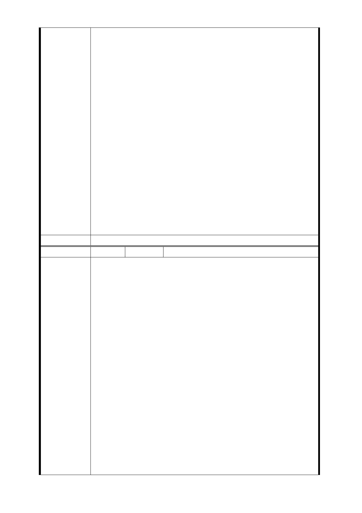

小學、臺北市立圖書館等相關單位，召開「研議於東園國小
旁增設捷運出入口並結合緊鄰東園派出所、東園消防隊及臺
北市立圖書館東園分館參與開發之可行性會議」共同研商結
果：東園街臺北市立圖書館東園分館等設置捷運出入口因距
離車站約達 140 公尺，超過捷運規範的緊急逃生安全距離，
且各單位既有相關建物尚無改建需求，另本府教育局已逐年
編列預算整修市圖東園分館，99 年度花費 700 萬元整修建物
，並於 100 及 101 年度陸續執行分館相關改善工程，現今拆
除將造成浪費公帑，對於圖書館共構經費籌措亦有所困難；
東園國小校舍未達使用年限，尚無法拆除，而且已無空間可
再提供捷運設施使用，初步協商研析結論為不具可行性，惟
建議東園街周邊建築物未來若有更新改建計畫，或東園國小
有改建計畫時，以增設出入口納入計畫整體興建，以促進東
園街之繁榮。
3.本府捷運工程局業已研擬 LG04 車站北移替代方案，擬使用
東園國小、萬大國小及天主教玫瑰堂部分土地，提臺北市都
市計畫委員會專案小組審查。
4.103 年 9 月 16 日第四次專案小組委員審查意見：LG04 車
站使用東園國小學校用地，取消捷八土地開發區，維持捷七
土地開發區、增設捷九土地開發區（面積 423 平方公尺）。
委員會決議 同編號交一－1 委員會決議。
編 號 捷七-2 陳情人 方○文
主旨：陳情人就有關「配合臺北市捷運萬大－中和－樹林線
工程變更延線土地為交通用地及土地開發區（捷）主要計畫
案」及「擬定臺北市捷運萬大－中和－樹林線土地開發區（
捷）暨劃定都市更新地區細部計畫案」在公開展覽期間，特
表示不同意將陳情人所有土地納入上述計畫案之交通用地及
土地開發區，詳如說明，請惠予納入審議參考，請鑒察。
說明：
一、按最高法院 74 年度判字第 75 號判例意旨：「主管機關變
更都市計劃，因而致特定人或得確定之多數人之權益遭受不
當或違法之損害者，應許提起行政爭訟，以資救濟」，可見本
陳 情 理 由 案都市計畫變更若有違法或不當時，致侵害陳情人權益，陳
情人有就該都市計畫提起行政爭訟之權。
二、緣陳情人之土地坐落於臺北市萬華區萬大段二小段 0570
－0004、0570－0005 地號（附件 1 ) ，面積為 693 平方公
尺，是受旨揭計畫影響之利害關係人。
三、查臺北市捷運萬大－中和－樹林線工程為萬華區民期盼
已久的交通建設，惟陳情人甫得知將該局擬將陳情人土地列
入土地開發區（捷），辦理聯合開發，並設捷運出入口，惟此
舉顯有重大不當：
（一）程序部分：陳情人土地是直接因本案計畫變更而受
重大影響的權利人，已如前述，陳情人之居所並未
- 122 -